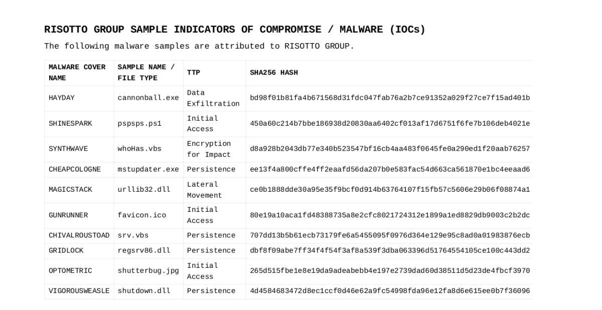
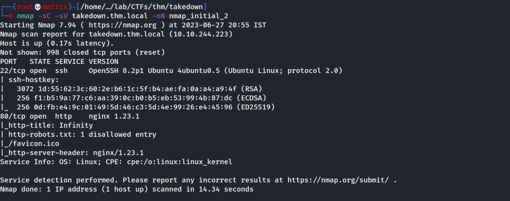
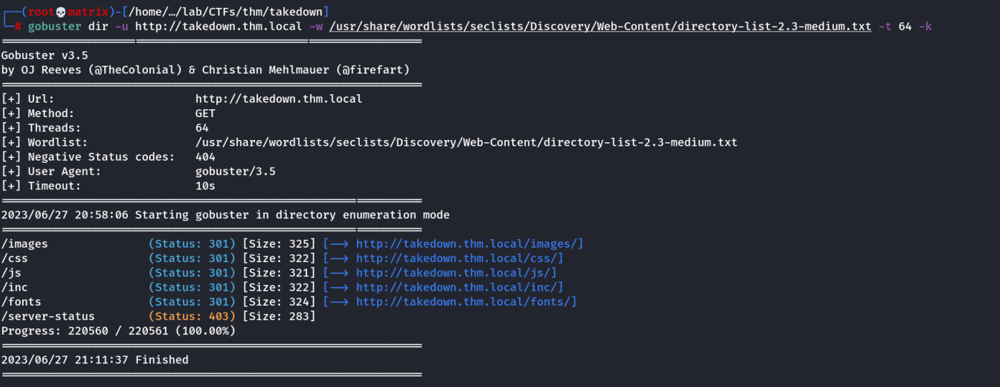
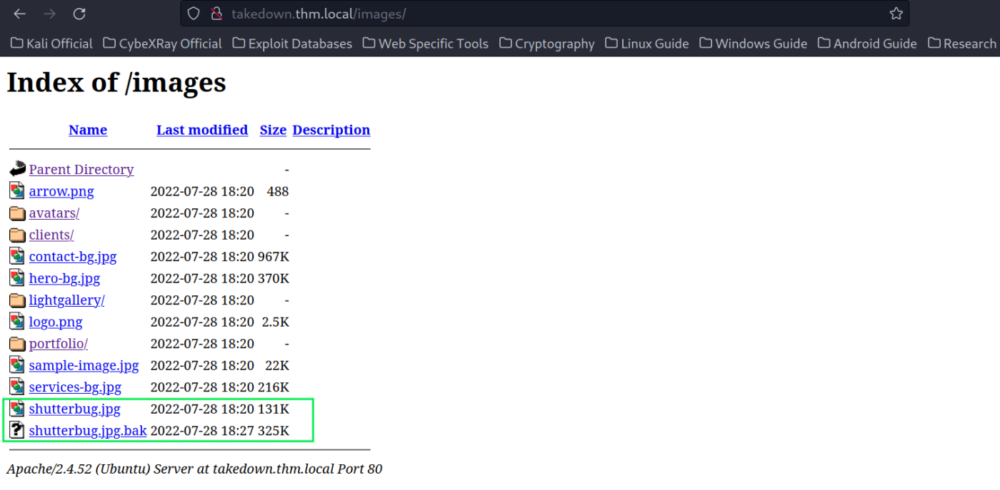
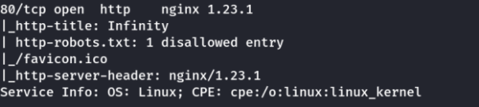
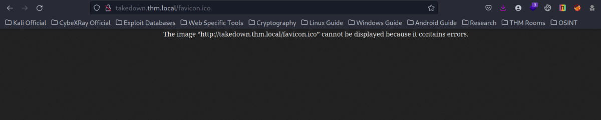
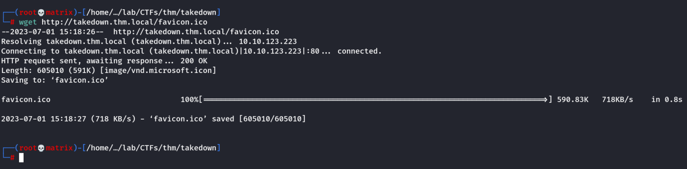
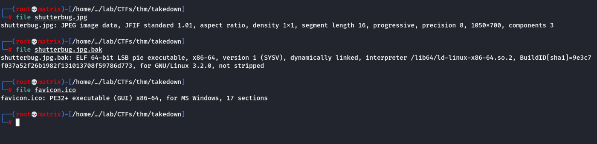

THM: Takedown

NOTE: We have to keep a lookout for the above files as these were used to takeover the system by RISOTTO group in the past.
Enumeration
Nmap

Directory listing

Upon viewing the directories we found intresting files that were listed in the Official Document provided to us in the room.

We will download both these files to our local Kali machine to examine them.
Next, upon seeing the nmap scan earlier we noticed a file disallowed in robots.txt

We go to the location & get the following error.

Maybe this is not an image file. We will download the file to examine it. As it is not listed in the directory, we need to use wget command to download the file.
wget http://takedown.thm.local/favicon.ico

Next, we will examine the files.

when we use the file command to show the details of the files, we got shutterbug.jpg as normal image file. However, the shutterbug.jpg.bak file is a linux executible & the favicon.ico is a windows executible file.